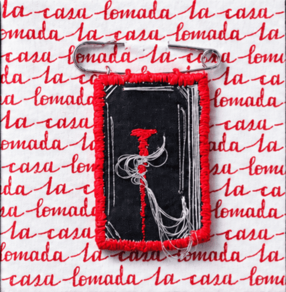
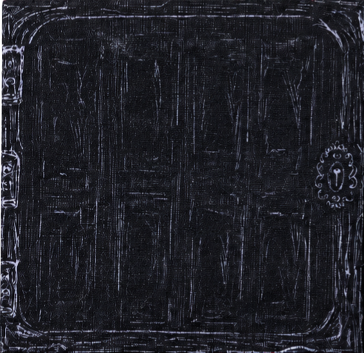
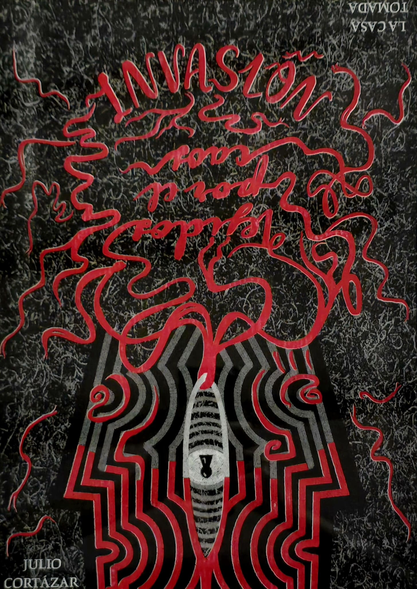
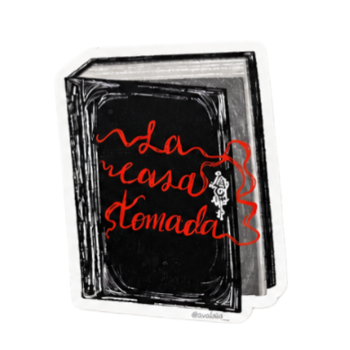
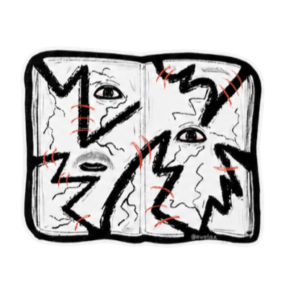
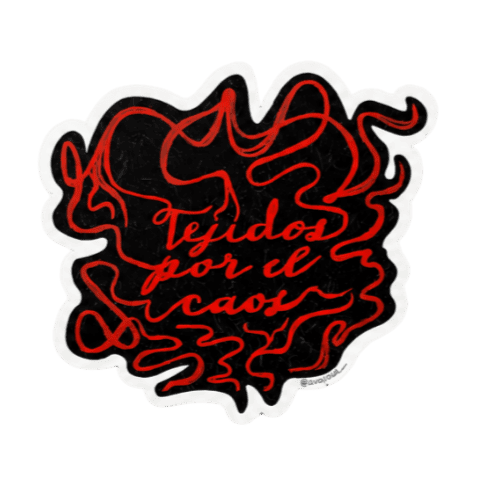
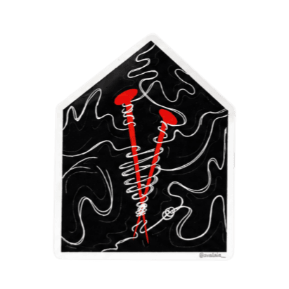
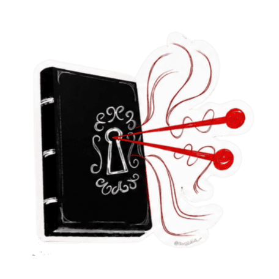

Pin
Tejíamos la rutina con hilos de ausencia, Era nuestra vida.

Poster
El silencio se quebró, Murmullo que nos encerró. El caos llegó, Y la casa nos tejió.

Leporello
Página tras página perdíamos nuestro juicio

Gif
Y en cada doblez aumentaba el desorden..





Stickers
Atrapados, Rotos, Fuimos tejidos por el caos.

Suéter
El hilo se detuvo, La tela se rasgó. El caos nos arropó, La casa nos tomó.